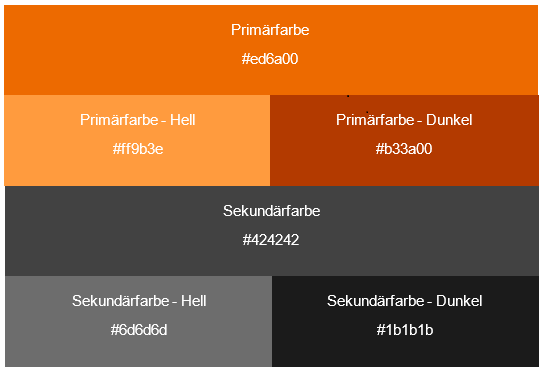

<!--
@license
Copyright (c) 2016 The Polymer Project Authors. All rights reserved.
This code may only be used under the BSD style license found at http://polymer.github.io/LICENSE.txt
The complete set of authors may be found at http://polymer.github.io/AUTHORS.txt
The complete set of contributors may be found at http://polymer.github.io/CONTRIBUTORS.txt
Code distributed by Google as part of the polymer project is also
subject to an additional IP rights grant found at http://polymer.github.io/PATENTS.txt
-->

<link rel="import" href="../bower_components/polymer/polymer-element.html">
<link rel="import" href="shared-styles.html">
<link rel="import" href="../fhws_elements/fhws-header.html">
<link rel="import" href="../fhws_elements/fhws-card.html">           
<link rel="import" href="../fhws_elements/fhws-link.html">
<link rel="import" href="../fhws_elements/fhws-code.html">
<link rel="import" href="../fhws_elements/fhws-collapse.html">

<dom-module id="fhws-view-farben">
  <template>
    <style include="shared-styles">
      :host {
        display: block;
      }
    </style>

      <fhws-header header="Design-Grundlagen">
          
          
        

          
          <!-- Card #2  -->  
    <fhws-card title="Farben" color="white">
		  <div class="card-content">
            <p>
                Die für die FHWS-Komponenten verwendeten Primärfarben beruhen auf den Farben des Styleguides für Print-Publikationen der FHWS. Auf Basis von Material Design ist weiterhin für jede Farbe eine helle und eine dunkle Variante sowie eine Kontrastfarbe festgelegt. <br><br>Es stehen somit <b>zwei Farb-Schemata</b> zur Verfügung:
                <ol>
                    <li><b>Primärfarbe Orange, Sekundärfarbe Grau</b><br>Dieses Farbschema nutzt die bisherige Primärfarben der FHWS und ist standardmäßig zu verwenden.</li><br>
                    
                    <br><br>
                    <li><b>Primärfarbe Grün, Sekundärfarbe Grau</b><br>Um einen bewussten Kontrast zu den Standard-Farben zu schaffen, kann auch die Primärfarbe Grün eingesetzt werden. In Print-Publikationen wird diese bislang nicht verwendet. Mögliche Anwendungsfälle für die grüne Primärfarbe in FHWS-Anwendungen sind beispielsweise:
                        <ul>
                            <li>um unterschiedliche Anwendungen für verschiedene Nutzergruppen (z.B. Studierende und Mitarbeiter) zu gestalten</li>
                            <li>um öffentliche und zugriffsbeschränkte Bereiche der Webanwendung zu kennzeichnen (Öffentlich vs. Intranet)</li>
                        </ul><br>
                        
                        <br><br>
                        Weiterhin ist eine <b>Standardfarbe</b> für den Hintergrund der Webanwendungen festgelegt:<br><br>
                         <div style="border-style: solid; border-width:0.5px; padding-left:16px; padding-top:16px; padding-bottom:16px; background-color: #f5f5f5;">
                             <p> Hintergrunfarbe Anwendung: #f5f5f5</p></div><br>
                        Für <b>textlastige Elemente</b> (Cards, Tabellen, etc.) wird als Hintergrundfarbe Weiß verwendet:<br><br>
                           <div style="border-style: solid; border-width:0.5px; padding-left:16px; padding-top:16px; padding-bottom:16px; background-color: #ffffff;">
                             <p> Hintergrunfarbe Textfelder: #ffffff</p></div><br>
                    </li>
                </ol>
            </p>    
              
           
		  </div><br>
	</fhws-card>
	 
          
  	<br>
  </template>

  <script>
    class FhwsViewFarben extends Polymer.Element {
      static get is() { return 'fhws-view-farben'; }
    }

    window.customElements.define(FhwsViewFarben.is, FhwsViewFarben);
  </script>
</dom-module>
